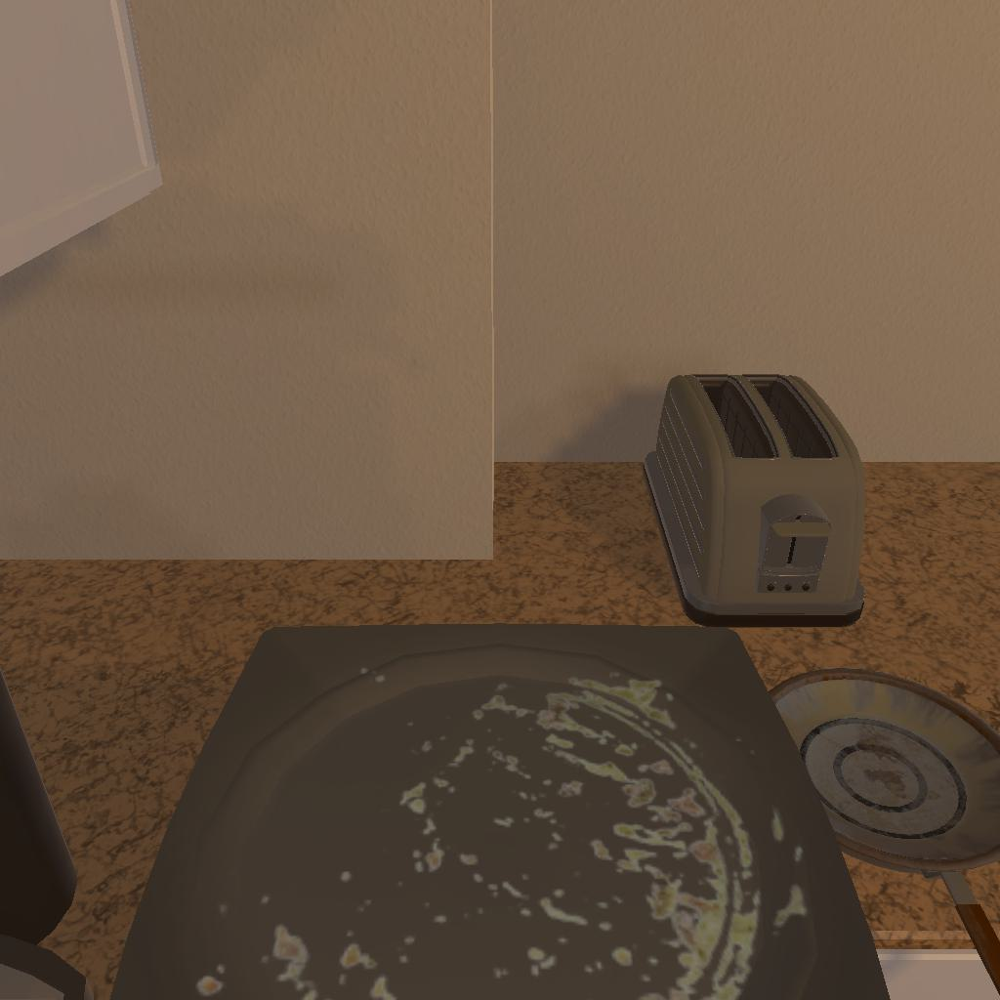

---------------------------------------------------------task: 13---------------------------------------------------------
--------------------------------------------------------------------------------------------------------------------------------------------------------------------
--------------------------------------------------------------------------------------------------------------------------------------------------------------------
Step:--------------------------------------------------------------------------18-------------------------------------------------------------------------------
----------------------------------------
VLM Prompt:
Image1:
**Instruction**
1. Analyze the provided image to identify all visible household objects, focusing on those relevant to the task description "clean some tomato and put it in garbagecan."
2. Use the analysis of the image and the task hint "The agent must find an object of the desired type, pick it up, go to a sink or a basin, clean the object with a sink or basin, and then find the correct location to place it and put it down there. The agent does not need to use soap bottle or faucet to clean the object, and the agent just needs to do action that is "clean the object with the sink or sink basin"." to answer the question: what is the most reasonable action in the choices for the task description "clean some tomato and put it in garbagecan"?
4. Decide and write the answer using the template: The answer is: (i): , where i is the real number. If there is no desired object in the image, search every place based on **Initial Observation** to find the object. And if no one is exactly correct, choose a similar answer.
**Initial Observation**
You are in the middle of a room. Looking quickly around you, you can see countertop (1-2), cabinet (1-11), garbagecan (1), toaster (1), sinkbasin (1), fridge (1), sink (1), microwave (1), drawer (1-3), stoveburner (1-4), coffeemachine (1), diningtable (1)
**Answer Choices**
(1): go to cabinet 1
(2): go to cabinet 2
(3): go to cabinet 3
(4): go to garbagecan 1
(5): go to cabinet 4
(6): go to toaster 1
(7): go to sinkbasin 1
(8): go to fridge 1
(9): go to sink 1
(10): go to cabinet 5
(11): go to microwave 1
(12): go to countertop 2
(13): go to cabinet 6
(14): go to cabinet 7
(15): go to drawer 1
(16): go to stoveburner 1
(17): go to stoveburner 2
(18): go to cabinet 8
(19): go to drawer 2
(20): go to stoveburner 3
(21): go to stoveburner 4
(22): go to coffeemachine 1
(23): go to cabinet 9
(24): go to cabinet 10
(25): go to cabinet 11
(26): go to diningtable 1
(27): go to drawer 3
(28): put plate 1 in/on countertop 1
(29): examine plate 1
(30): examine countertop 1
**Answer**
Let's think step by step by following the instructions.
----------------------------------------
----------------------------------------
Original Response:
First, we need to clean some tomato. We do not see any tomato in the provided image, so we need to search for it. The tomato is likely to be stored in the fridge or on a countertop. Based on the initial observation, we have fridge 1 and countertop 1-2 as possible locations to find the tomato.
Once we find the tomato, we need to clean it. The instruction mentions that we do not need to use soap or a faucet, so we just need to go to a sink or sink basin. In the image, we can see the sink basin, so we know it's available.
After cleaning the tomato, we need to put it in the garbage can. The garbage can is mentioned in the initial observation as garbagecan 1.
Therefore, the most reasonable actions to perform the task "clean some tomato and put it in garbagecan" would be to first find the tomato, which is not visible in the image, then clean it at the sink basin, and finally put it in the garbage can.
Since the image does not show any tomato, and the initial observation does not specify the exact location of the tomato, we need to check the most likely places where a tomato would be, which are the fridge and the countertop.
The answer is: (8): go to fridge 1. If the tomato is not found there, the next action would be (12): go to countertop 2. After finding the tomato, we would (7): go to sinkbasin 1 to clean it, and lastly (4): go to garbagecan 1 to dispose of it.
----------------------------------------
----------------------------------------
>>> Refine Original VLM Response and Get Pure Action: go to fridge 1
----------------------------------------
-----------------------------------------------------------------
Running time: 20.917388916015625 seconds
Total Money: 4.20449
-----------------------------------------------------------------
-----------------------------------------------------------------
Text Observation:You arrive at loc 8. The fridge 1 is closed.
-----------------------------------------------------------------
UNSUCCEED